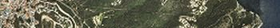
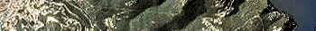
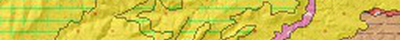
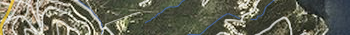
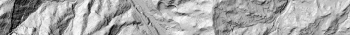
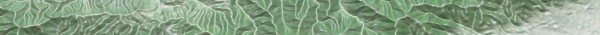
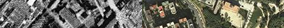

Estils ContexMaps d'àmbit mundial per Vector Tiles
- Mapes generals
-
Mapa estàndard
https://geoserveis.icgc.cat/contextmaps/icgc_mapa_estandard.json
-
Mapa gris
https://geoserveis.icgc.cat/contextmaps/icgc_mapa_base_gris.json
-
Mapa gris simplificat
https://geoserveis.icgc.cat/contextmaps/icgc_mapa_base_gris_simplificat.json
- Mapes administratius
-
Delimitació: mapa estàndard
https://geoserveis.icgc.cat/contextmaps/icgc_delimitacio_estandard.json
-
Delimitació: mapa gris
https://geoserveis.icgc.cat/contextmaps/icgc_delimitacio_gris.json
-
Delimitació: límits administratius
https://geoserveis.icgc.cat/contextmaps/icgc_delimitacio_limits_administratius.json
- Mapes de xarxa viària
-
Xarxa viària: estàndard
https://geoserveis.icgc.cat/contextmaps/icgc_xarxa_viaria_estandard.json
-
Xarxa viària: gris
https://geoserveis.icgc.cat/contextmaps/icgc_xarxa_viaria_gris.json
- Mapes d’infraestructures viàries i edificacions en 3D
-
Infraestructures viàries i edificacions en 3D: estàndard
https://geoserveis.icgc.cat/contextmaps/icgc_infraestructures_edificacions_3D_vialitat_estandard.json
-
Infraestructures viàries i edificacions en 3D: gris
https://geoserveis.icgc.cat/contextmaps/icgc_infraestructures_edificacions_3D_vialitat_gris.json
-
Infraestructures viàries i edificacions en 3D: blanc
https://geoserveis.icgc.cat/contextmaps/icgc_infraestructures_edificacions_3D_vialitat_blanc.json
- Mapes d’àrees urbanes
-
Mapa d'àrees de poblament
https://geoserveis.icgc.cat/contextmaps/icgc_arees_poblament.json
-
Mapa d'edificacions: estàndard
https://geoserveis.icgc.cat/contextmaps/icgc_edificacions_estandard.json
-
Mapa d'edificacions: gris
https://geoserveis.icgc.cat/contextmaps/icgc_edificacions_gris.json
- Mapes relleu
-
Ombra
https://geoserveis.icgc.cat/contextmaps/icgc_ombra.json
-
Ombra amb corbes de nivell
https://geoserveis.icgc.cat/contextmaps/icgc_ombra_corbes.json
-
Ombra fosca
https://geoserveis.icgc.cat/contextmaps/icgc_ombra_fosca.json
-
Ombra amb hipsometria
https://geoserveis.icgc.cat/contextmaps/icgc_ombra_hipsometria.json
-
Ombra amb hipsometria i corbes de nivell
https://geoserveis.icgc.cat/contextmaps/icgc_ombra_hipsometria_corbes.json
- Mapes d'espais protegits
-
Mapa d'espais protegits: gris
https://geoserveis.icgc.cat/contextmaps/icgc_espais_protegits_gris.json
-
Mapa d'espais protegits: hidrografia
https://geoserveis.icgc.cat/contextmaps/icgc_espais_protegits_hidrografia.json
-
Mapa d'espais protegits: xarxa hidrogràfica i xarxa viària
https://geoserveis.icgc.cat/contextmaps/icgc_espais_protegits_xarxes_hidrografia_vials.json
- Mapes d’imatge
-
Ortoimatge estàndard
https://geoserveis.icgc.cat/contextmaps/icgc_orto_estandard.json
-
Ortoimatge amb toponímia
https://geoserveis.icgc.cat/contextmaps/icgc_orto_toponimia.json
-
Ortoimatge amb xarxa viària
https://geoserveis.icgc.cat/contextmaps/icgc_orto_xarxa_viaria.json
-
Ortoimatge híbrida
https://geoserveis.icgc.cat/contextmaps/icgc_orto_hibrida.json
- Mapes geològics
-
Mapa informació geològica
https://geoserveis.icgc.cat/contextmaps/icgc_geologic_informacio.json
-
Mapa riscos geològics
https://geoserveis.icgc.cat/contextmaps/icgc_geologic_riscos.json
Visor:
Exemples integració amb:
Editors d'estils:
Piràmides Vector Tiles (EndPoints)
-
contextmaps (ICGC + OpenMapTiles)
https://geoserveis.icgc.cat/vector-tiles/contextmaps/{z}/{x}/{y}.pbfICGC MTC25M
https://tilemaps.icgc.cat/tileserver/bt25m_tilejson.json (TileJSON endpoint)https://tilemaps.icgc.cat/tileserver/tileserver.php/bt25m_vector_7a14/{z}/{x}/{y}.pbfICGC BT5M
https://tilemaps.icgc.cat/tileserver/bt5m_tilejson.json (TileJSON endpoint)https://tilemaps.icgc.cat/tileserver/tileserver.php/bt5m_vector/{z}/{x}/{y}.pbf
Bases Raster Tiles
- ContextMaps (tot el món)
-
Mapa estandard
https://geoserveis.icgc.cat/styles/icgc_mapa_estandard/{z}/{x}/{y}.png
-
Mapa estàndard gris
https://geoserveis.icgc.cat/styles/icgc_mapa_base_gris/{z}/{x}/{y}.png
- Instamaps (tot el món)
-
Topogràfic web (tot el món nivell 14)
https://tilemaps.icgc.cat/mapfactory/wmts/osm_suau/CAT3857_15/{z}/{x}/{y}.png - Catalunya
-
Ortofoto
https://geoserveis.icgc.cat/icc_mapesmultibase/noutm/wmts/orto/GRID3857/{z}/{x}/{y}.jpeg -
Topogràfic clàssic
https://geoserveis.icgc.cat/icc_mapesmultibase/noutm/wmts/topo/GRID3857/{z}/{x}/{y}.jpeg -
Topogràfic web
https://tilemaps.icgc.cat/mapfactory/wmts/topo_suau/CAT3857/{z}/{x}/{y}.png -
Ortofoto augmentada
https://tilemaps.icgc.cat/mapfactory/wmts/orto_augmentada/CAT3857/{z}/{x}/{y}.jpeg -
Geològic
https://tilemaps.icgc.cat/mapfactory/wmts/geologia/MON3857NW/{z}/{x}/{y}.png -
Topogràfic web gris
https://tilemaps.icgc.cat/mapfactory/wmts/gris_topo_suau/CAT3857/{z}/{x}/{y}.png -
Híbrid - Base híbrida per combinar amb ortoforto
https://tilemaps.icgc.cat/mapfactory/wmts/hibrida_total/CAT3857/{z}/{x}/{y}.png -
Topogràfic web fosc
https://tilemaps.icgc.cat/mapfactory/wmts/nit_topo_suau/CAT3857/{z}/{x}/{y}.png -
Toponímia - Capa transparent de toponímia
https://tilemaps.icgc.cat/mapfactory/wmts/toponimia/CAT3857/{z}/{x}/{y}.png -
Administrativa simplificada
https://tilemaps.icgc.cat/mapfactory/wmts/limits/CAT3857/{z}/{x}/{y}.png -
Relleu
https://tilemaps.icgc.cat/mapfactory/wmts/relleu/CAT3857/{z}/{x}/{y}.png -
Normal Maps - Tècnica 3D que permet donar una il·luminació i relleu a una superfície. (Exemple)
http://betaserver.icgc.cat/tileserver3/tileserver.php?/norm2x2/{z}/{x}/{y}.png
Exemples integració amb:
Integrable amb: Leaflet OpenLayers MapLibre GL Js MapBox GL Js ArcGis API Js Cesium Js
Terrenys
- ICGC Terreny 5m (Cesium JS)
https://tilemaps.icgc.cat/terrenys/demextes/ -
ICGC Terreny-RGB dem 2m (MapLibreGL JS)
https://tilemaps.icgc.cat/tileserver/tileserver.php/terreny_icgc_2m_rgb/{z}/{x}/{y}.pngICGC Terreny-RGB dem 5m (MapLibreGL JS)
https://tilemaps.icgc.cat/tileserver/tileserver.php/mapboxTerrain/{z}/{x}/{y}.pngExemples 3D integració amb:
Integrable amb: Cesium JS MapBox GL JS
Estils àmbit Catalunya per Vector Tiles
-
Clar
https://tilemaps.icgc.cat/tileserver/styles/clar.json -
Orto
https://tilemaps.icgc.cat/tileserver/styles/orto.json -
Terreny
https://tilemaps.icgc.cat/tileserver/styles/terrain.json -
Fosc
https://tilemaps.icgc.cat/tileserver/styles/fosc.json -
Blavós
https://tilemaps.icgc.cat/tileserver/styles/blavos.json -
Gris
https://tilemaps.icgc.cat/tileserver/styles/gris.json -
ICGC5M
https://tilemaps.icgc.cat/tileserver/styles/icgc5mv2.json -
ICGC5M (amb relleu)
https://tilemaps.icgc.cat/tileserver/styles/icgc5m.json -
ICGC25M
https://tilemaps.icgc.cat/tileserver/styles/icgc25m.json -
Polit
https://tilemaps.icgc.cat/tileserver/styles/polit.json
-
Raster
https://tilemaps.icgc.cat/tileserver/styles/raster.json
Exemples integració amb:
Demostradors
-
Comparador VISOR DE L'EVOLUCIÓ DEL TERRITORI
https://github.com/gencat/ICGC-comparador-gificador https://betaportal.icgc.cat/comparador-gificador/ -
100 Cims emblematic 3D
https://github.com/gencat/ICGC-100cims http://betaserver.icgc.cat/cesium/100cims.html -
Més demostradors..
http://betaportal.icgc.cat/
Eines:
Contacte: